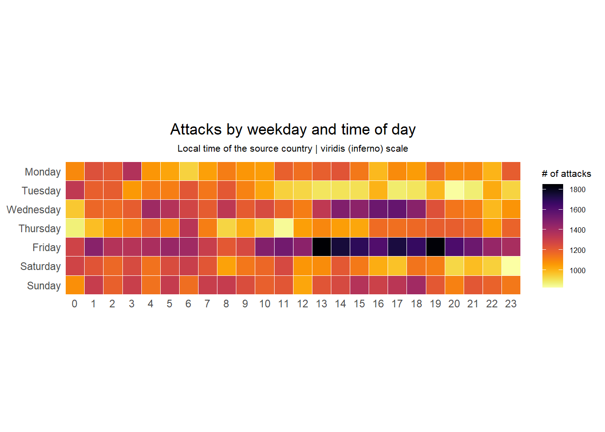
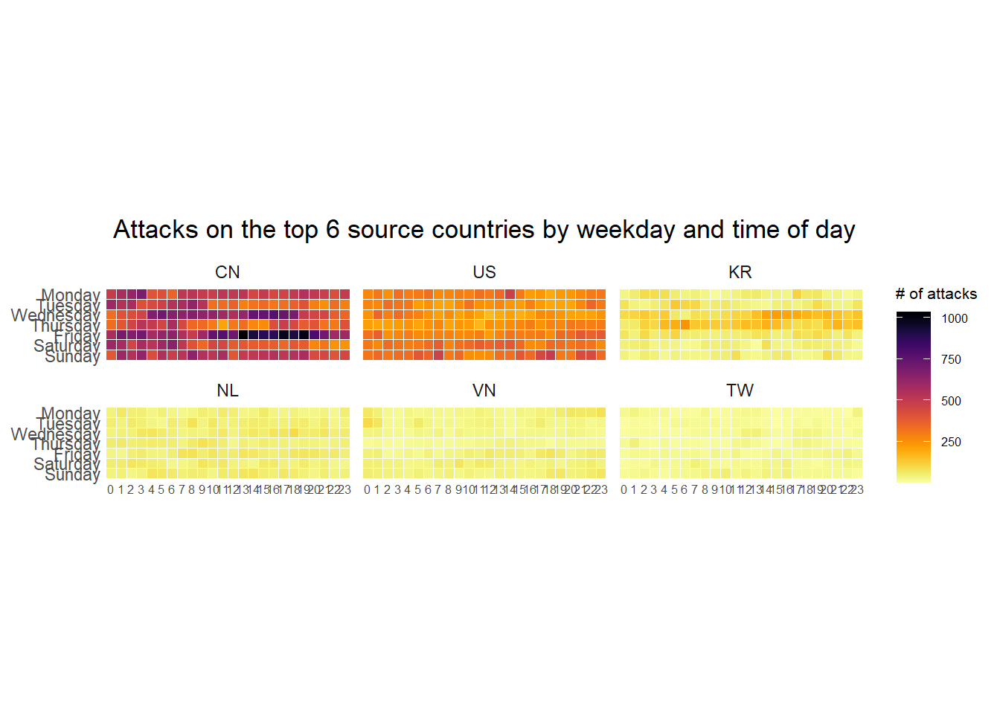
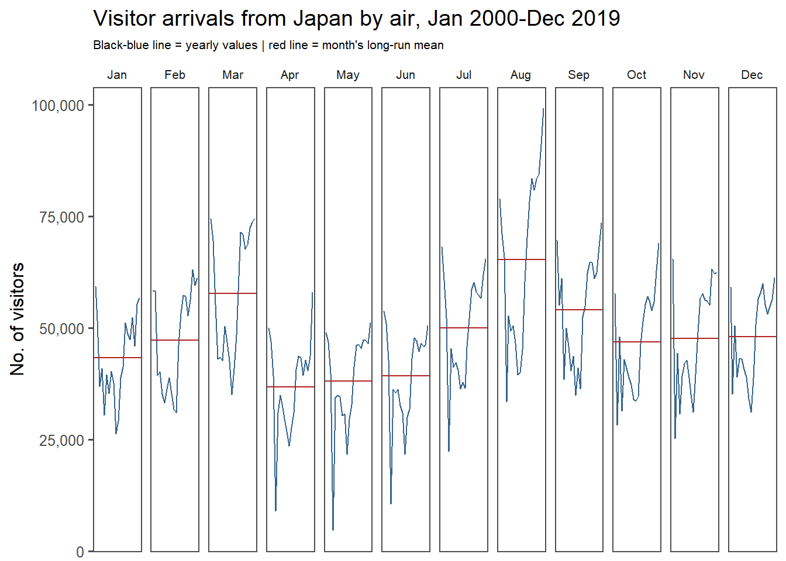
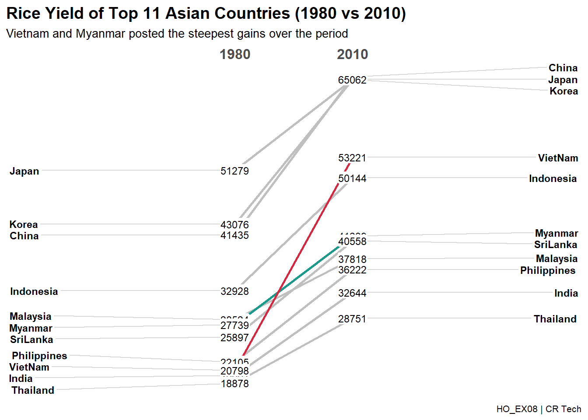
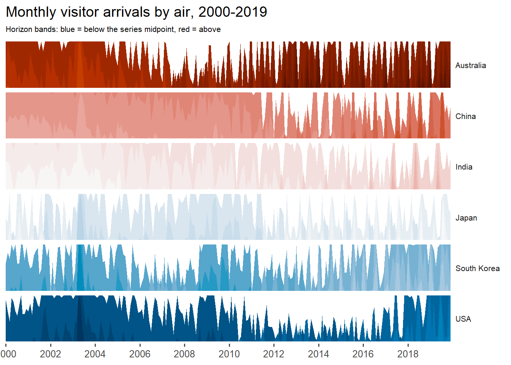
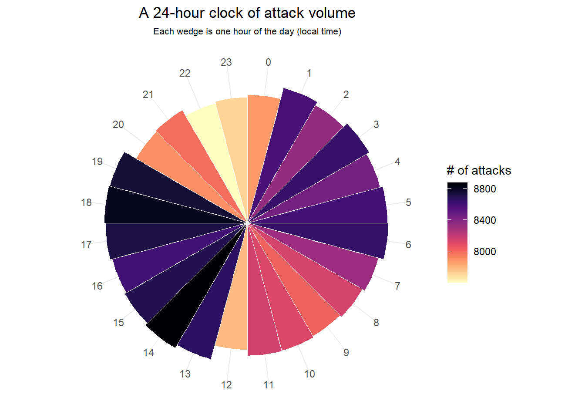
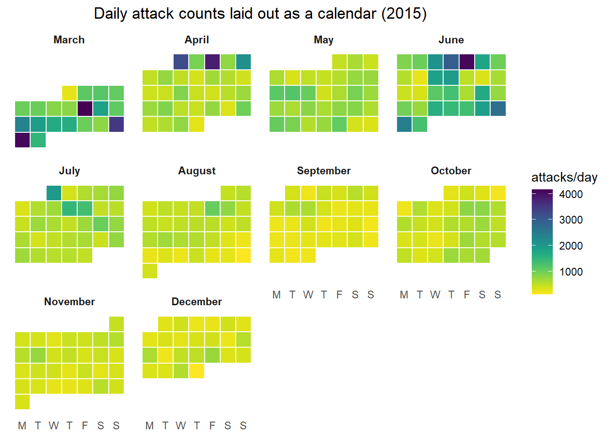
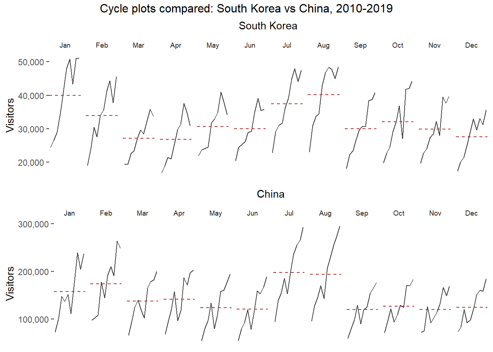
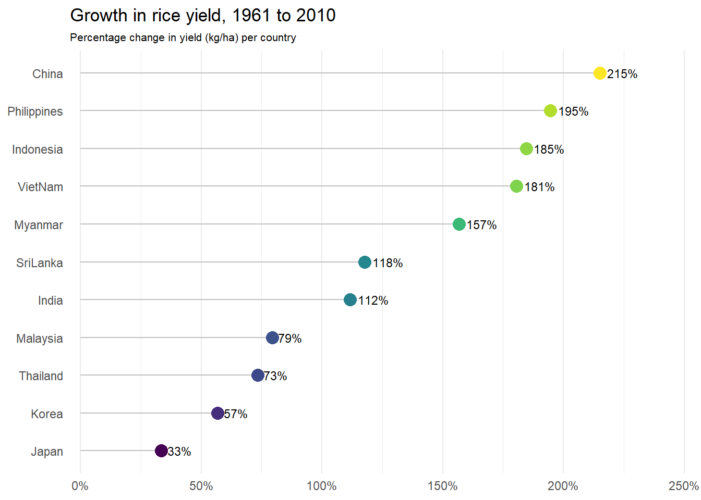

# data.table is loaded BEFORE lubridate + tidyverse on purpose: data.table also
# exports wday()/month()/hour()/year(), so loading it first lets the lubridate
# and dplyr versions win the masked names (e.g. wday(week_start=), month(label=)).
pacman::p_load(scales, viridis, ggthemes, gridExtra, readxl, knitr,
data.table, lubridate, tidyverse, CGPfunctions, ggHoriPlot)Hands-on Exercise 8:
Visualising and Analysing Time-Oriented Data
1 Overview
This hands-on exercise follows Chapter 17: Visualising and Analysing Time-oriented Data from R for Visual Analytics. Rather than reproducing the reference work line-for-line, I rebuild each technique with my own variations (different focal series, colour systems, faceting and themes) and then add an Extras section with five pieces of analysis that appear in neither the chapter nor the reference notebook.
The techniques covered are:
- plotting a calendar heatmap with
ggplot2(my version uses aviridiscolour scale and a Monday-first weekday order), - plotting a cycle plot (my version profiles Japan over the full 2000-2019 window),
- plotting a slopegraph with
CGPfunctions(my version contrasts 1980 vs 2010 and highlights the biggest movers), - plus five extras: a horizon chart, a 24-hour radial attack clock, a GitHub-style calendar grid, a
gridExtraside-by-side comparison, and a rice-yield growth ranking.
Scope rule. I only use packages that already appear in the source chapter or the reference notebook. The union of those two package lists is the full toolbox below - nothing else is introduced. Note that
viridis,gridExtraanddata.tableare loaded by the reference but never actually used there; my variations and extras put them to work.ggHoriPlotis listed by the source chapter but not used by either file, so the horizon chart in Section 6 is built strictly within the allowed toolbox.
2 Getting Started
2.1 Loading the required packages
3 Plotting Calendar Heatmap
3.1 Importing the data
We import the eventlog.csv cyber-attack log (≈200k records, spanning Mar-Dec 2015).
| timestamp | source_country | tz |
|---|---|---|
| 2015-03-12 15:59:16 | CN | Asia/Shanghai |
| 2015-03-12 16:00:48 | FR | Europe/Paris |
| 2015-03-12 16:02:26 | CN | Asia/Shanghai |
| 2015-03-12 16:02:38 | US | America/Chicago |
| 2015-03-12 16:03:22 | CN | Asia/Shanghai |
| 2015-03-12 16:03:45 | CN | Asia/Shanghai |
3.2 Data preparation
Like the reference, I convert each UTC timestamp to its local time before pulling out the weekday and hour, because the source country’s tile only makes sense in local time. My variation differs in two ways:
- I replace the superseded
do()+ helper-function pattern with a moderngroup_modify()over each timezone, and - I derive the weekday with
lubridate::wday(week_start = 1)mapped to fixed English labels (locale-independent), ordering the axis Monday at the top instead of the reference’s Saturday-first order.
wkday_levels <- c("Monday", "Tuesday", "Wednesday",
"Thursday", "Friday", "Saturday", "Sunday")
attacks_cleaned <- attacks %>%
group_by(tz) %>%
group_modify(~ {
local_times <- ymd_hms(.x$timestamp) %>% with_tz(tzone = .y$tz)
tibble(
source_country = .x$source_country,
wkday = wkday_levels[wday(local_times, week_start = 1)],
hour = hour(local_times)
)
}) %>%
ungroup() %>%
mutate(
# rev() so Monday is drawn at the TOP of the heatmap
wkday = factor(wkday, levels = rev(wkday_levels)),
hour = factor(hour, levels = 0:23)
)
# cache the expensive timezone-converted frame
write_rds(attacks_cleaned, "data/rds/attacks_cleaned.rds")
kable(head(attacks_cleaned))| tz | source_country | wkday | hour |
|---|---|---|---|
| Africa/Cairo | BG | Saturday | 22 |
| Africa/Cairo | TW | Sunday | 8 |
| Africa/Cairo | TW | Sunday | 10 |
| Africa/Cairo | CN | Sunday | 13 |
| Africa/Cairo | US | Sunday | 17 |
| Africa/Cairo | CA | Monday | 13 |
3.3 Building the calendar heatmap
I aggregate to weekday x hour and draw the tiles. The key visual variation from the reference: instead of a two-point scale_fill_gradient() (sky-blue to dark-blue), I use a perceptually-uniform viridis “inferno” ramp so the busiest cells pop.
grouped <- attacks_cleaned %>%
count(wkday, hour) %>%
ungroup() %>%
na.omit()
p_heat <- ggplot(grouped, aes(hour, wkday, fill = n)) +
geom_tile(colour = "white", linewidth = 0.1) +
theme_tufte(base_family = "Helvetica") +
coord_equal() +
scale_fill_viridis(name = "# of attacks", option = "inferno", direction = -1) +
labs(x = NULL, y = NULL,
title = "Attacks by weekday and time of day",
subtitle = "Local time of the source country | viridis (inferno) scale") +
theme(axis.ticks = element_blank(),
plot.title = element_text(hjust = 0.5),
plot.subtitle = element_text(hjust = 0.5, size = 8),
legend.title = element_text(size = 8),
legend.text = element_text(size = 6))
ggsave("images/calendar_heatmap.png", p_heat, width = 8, height = 4, dpi = 150)
p_heat
3.4 Generating data per country
To compare patterns across the most-targeted countries I rank them by attack volume. My variation widens the focus from the reference’s top 4 to the top 6 countries.
| source_country | n | percent |
|---|---|---|
| CN | 85243 | 42.62171% |
| US | 48684 | 24.34212% |
| KR | 12648 | 6.32403% |
| NL | 8572 | 4.28602% |
| VN | 6340 | 3.17002% |
| TW | 3469 | 1.73451% |
3.5 Plotting the faceted heatmaps
p_heat_facet <- ggplot(top6_attacks, aes(hour, wkday, fill = n)) +
geom_tile(colour = "white", linewidth = 0.1) +
theme_tufte(base_family = "Helvetica") +
coord_equal() +
scale_fill_viridis(name = "# of attacks", option = "inferno", direction = -1) +
facet_wrap(~ source_country, ncol = 3) +
labs(x = NULL, y = NULL,
title = "Attacks on the top 6 source countries by weekday and time of day") +
theme(axis.ticks = element_blank(),
axis.text.x = element_text(size = 6),
plot.title = element_text(hjust = 0.5),
legend.title = element_text(size = 8),
legend.text = element_text(size = 6))
ggsave("images/calendar_heatmap_top6.png", p_heat_facet, width = 10, height = 5, dpi = 150)
p_heat_facet
4 Plotting Cycle Plot
4.1 Data import
4.2 Deriving month and year
4.3 Extracting the target country
The reference profiles Vietnam from 2010. My variation profiles Japan across the full available window (2000-2019), giving 20 points per monthly facet instead of 10.
4.4 Computing monthly averages
The dashed reference line is each month’s long-run mean.
4.5 Plotting the cycle plot
Beyond the country/period swap, my styling differs from the reference: a steel-blue trend line, a firebrick solid mean line, theme_few() instead of theme_tufte(), and comma-formatted counts via scales::label_comma().
p_cycle <- ggplot() +
geom_line(data = japan,
aes(x = year, y = `Japan`, group = month),
colour = "steelblue4", linewidth = 0.4) +
geom_hline(data = hline.data,
aes(yintercept = avgvalue),
linetype = "solid", colour = "firebrick", linewidth = 0.4) +
facet_grid(~ month) +
scale_y_continuous(labels = label_comma()) +
labs(title = "Visitor arrivals from Japan by air, Jan 2000-Dec 2019",
subtitle = "Black-blue line = yearly values | red line = month's long-run mean",
x = NULL, y = "No. of visitors") +
theme_few(base_family = "Helvetica") +
theme(axis.text.x = element_blank(),
axis.ticks.x = element_blank(),
plot.subtitle = element_text(size = 8),
strip.text = element_text(size = 8))
ggsave("images/cycle_plot_japan.png", p_cycle, width = 10, height = 4, dpi = 150)
p_cycle
5 Plotting Slope Graph
5.1 Data import
5.2 Generating the slopegraph
The reference compares 1961 vs 1980. My variation compares the most recent 30-year span in the data, 1980 vs 2010, and instead of colouring every country I grey out the field and highlight the two steepest climbers (Vietnam and Myanmar) with newggslopegraph()’s named LineColor argument.
rice_years <- rice %>%
mutate(Year = factor(Year)) %>%
filter(Year %in% c(1980, 2010))
# grey baseline, then accent the two biggest movers
groups <- unique(rice_years$Country)
line_pal <- setNames(rep("gray75", length(groups)), groups)
line_pal["VietNam"] <- "#D7263D"
line_pal["Myanmar"] <- "#1B998B"
p_slope <- rice_years %>%
newggslopegraph(Year, Yield, Country,
Title = "Rice Yield of Top 11 Asian Countries (1980 vs 2010)",
SubTitle = "Vietnam and Myanmar posted the steepest gains over the period",
Caption = "HO_EX08 | CR Tech",
LineColor = line_pal,
LineThickness = 1,
DataTextSize = 3,
YTextSize = 3)
ggsave("images/slopegraph_rice.png", p_slope, width = 7, height = 7, dpi = 150)
p_slope
6 Extras
Horizon chart of air arrivals (ggHoriPlot)
ggHoriPlot is listed by the source chapter’s package set but neither file builds a horizon chart. A horizon plot folds a series into stacked, colour-banded layers so many time series can be compared in a compact strip. Here I profile monthly arrivals for six markets across 2000-2019.
arrivals_long <- air %>%
select(`Month-Year`, China, Japan, `South Korea`, USA, Australia, India) %>%
pivot_longer(-`Month-Year`, names_to = "country", values_to = "arrivals") %>%
mutate(date = as.Date(`Month-Year`))
p_horizon <- ggplot(arrivals_long) +
geom_horizon(aes(date, arrivals, fill = after_stat(Cutpoints)),
origin = "midpoint", horizonscale = 6) +
scale_fill_hcl(palette = "RdBu", reverse = TRUE) +
facet_grid(country ~ .) +
theme_few() +
scale_x_date(expand = c(0, 0), date_breaks = "2 years", date_labels = "%Y") +
labs(title = "Monthly visitor arrivals by air, 2000-2019",
subtitle = "Horizon bands: blue = below the series midpoint, red = above",
x = NULL) +
theme(panel.spacing.y = unit(0, "lines"),
strip.text.y = element_text(angle = 0, hjust = 0, size = 8),
axis.text.y = element_blank(),
axis.title.y = element_blank(),
axis.ticks.y = element_blank(),
panel.border = element_blank(),
legend.position = "none",
plot.subtitle = element_text(size = 8))
ggsave("images/extra_horizon.png", p_horizon, width = 9, height = 5, dpi = 150)
p_horizon
A 24-hour radial “attack clock” (coord_polar)
The Section 3 heatmap reads time on a Cartesian axis. Wrapping the hour-of-day totals around coord_polar() turns them into a clock face, making the daily rhythm of attacks immediately legible.
hourly <- attacks_cleaned %>%
count(hour) %>%
na.omit()
p_clock <- ggplot(hourly, aes(x = hour, y = n, fill = n)) +
geom_col(width = 1, colour = "white", linewidth = 0.2) +
coord_polar(start = 0) +
scale_fill_viridis(name = "# of attacks", option = "magma", direction = -1) +
labs(title = "A 24-hour clock of attack volume",
subtitle = "Each wedge is one hour of the day (local time)",
x = NULL, y = NULL) +
theme_minimal(base_family = "Helvetica") +
theme(axis.text.y = element_blank(),
panel.grid.major.y = element_blank(),
plot.title = element_text(hjust = 0.5),
plot.subtitle = element_text(hjust = 0.5, size = 8))
ggsave("images/extra_attack_clock.png", p_clock, width = 6, height = 6, dpi = 150)
p_clock
GitHub-style calendar grid heatmap (lubridate + viridis)
The reference “calendar heatmap” is really a weekday-by-hour grid. Here I build a true calendar layout: one panel per month, weekdays across the columns and week-of-month down the rows, each day-cell shaded by its total attack count - exactly the layout GitHub uses for contribution graphs.
daily <- attacks %>%
mutate(date = as_date(ymd_hms(timestamp))) %>%
count(date) %>%
mutate(
month = month(date, label = TRUE, abbr = FALSE),
wday = wday(date, week_start = 1), # 1 = Mon ... 7 = Sun
first_wday = wday(floor_date(date, "month"), week_start = 1),
week_of_month = ceiling((day(date) + first_wday - 1) / 7)
)
p_calendar <- ggplot(daily, aes(x = wday, y = week_of_month, fill = n)) +
geom_tile(colour = "white", linewidth = 0.4) +
facet_wrap(~ month, ncol = 4) +
scale_y_reverse(breaks = NULL) +
scale_x_continuous(breaks = 1:7,
labels = c("M", "T", "W", "T", "F", "S", "S")) +
scale_fill_viridis(name = "attacks/day", option = "viridis", direction = -1) +
coord_equal() +
labs(title = "Daily attack counts laid out as a calendar (2015)",
x = NULL, y = NULL) +
theme_minimal(base_family = "Helvetica") +
theme(panel.grid = element_blank(),
plot.title = element_text(hjust = 0.5),
strip.text = element_text(face = "bold"))
ggsave("images/extra_calendar_grid.png", p_calendar, width = 9, height = 5, dpi = 150)
p_calendar
Side-by-side cycle plots (gridExtra::grid.arrange)
gridExtra is loaded by both reference files but never used. I put it to work to stack two cycle plots into a single comparison panel - here South Korea vs China arrivals from 2010 - so their seasonal shapes can be read against each other.
cycle_plot <- function(df, country) {
d <- df %>%
transmute(month, year, value = .data[[country]]) %>%
filter(year >= 2010)
hl <- d %>% group_by(month) %>% summarise(avgvalue = mean(value))
ggplot() +
geom_line(data = d, aes(year, value, group = month),
colour = "grey25", linewidth = 0.4) +
geom_hline(data = hl, aes(yintercept = avgvalue),
colour = "firebrick", linetype = "dashed", linewidth = 0.4) +
facet_grid(~ month) +
scale_y_continuous(labels = label_comma()) +
labs(title = country, x = NULL, y = "Visitors") +
theme_tufte(base_family = "Helvetica") +
theme(axis.text.x = element_blank(),
axis.ticks.x = element_blank(),
plot.title = element_text(hjust = 0.5, size = 11),
strip.text = element_text(size = 7))
}
p_kr <- cycle_plot(air, "South Korea")
p_cn <- cycle_plot(air, "China")
p_compare <- arrangeGrob(p_kr, p_cn, ncol = 1,
top = "Cycle plots compared: South Korea vs China, 2010-2019")
ggsave("images/extra_cycle_compare.png", p_compare, width = 10, height = 6, dpi = 150)
grid.arrange(p_compare)
Rice-yield growth ranking (scales::percent)
The slopegraph shows two endpoints; this extra distils the whole story into a ranking. I compute each country’s percentage change in rice yield from 1961 to 2010 and draw a lollipop chart sorted by growth, labelled with scales::percent().
rice_growth <- rice %>%
filter(Year %in% c(1961, 2010)) %>%
select(Country, Year, Yield) %>%
pivot_wider(names_from = Year, values_from = Yield, names_prefix = "y") %>%
mutate(growth = (y2010 - y1961) / y1961) %>%
arrange(growth) %>%
mutate(Country = factor(Country, levels = Country))
p_growth <- ggplot(rice_growth, aes(x = growth, y = Country)) +
geom_segment(aes(x = 0, xend = growth, y = Country, yend = Country),
colour = "grey75") +
geom_point(aes(colour = growth), size = 4) +
geom_text(aes(label = percent(growth, accuracy = 1)),
hjust = -0.25, size = 3) +
scale_x_continuous(labels = percent_format(),
expand = expansion(mult = c(0.02, 0.18))) +
scale_colour_viridis(option = "D", guide = "none") +
labs(title = "Growth in rice yield, 1961 to 2010",
subtitle = "Percentage change in yield (kg/ha) per country",
x = NULL, y = NULL) +
theme_minimal(base_family = "Helvetica") +
theme(panel.grid.major.y = element_blank(),
plot.subtitle = element_text(size = 8))
ggsave("images/extra_yield_growth.png", p_growth, width = 8, height = 5, dpi = 150)
p_growth
7 References
- Kam, T.S. R for Visual Analytics - Chapter 17: Visualising and Analysing Time-oriented Data.
ggHoriPlot- horizon plots inggplot2.CGPfunctions-newggslopegraph()for slopegraphs.viridisandscales- colour scales and axis formatting.